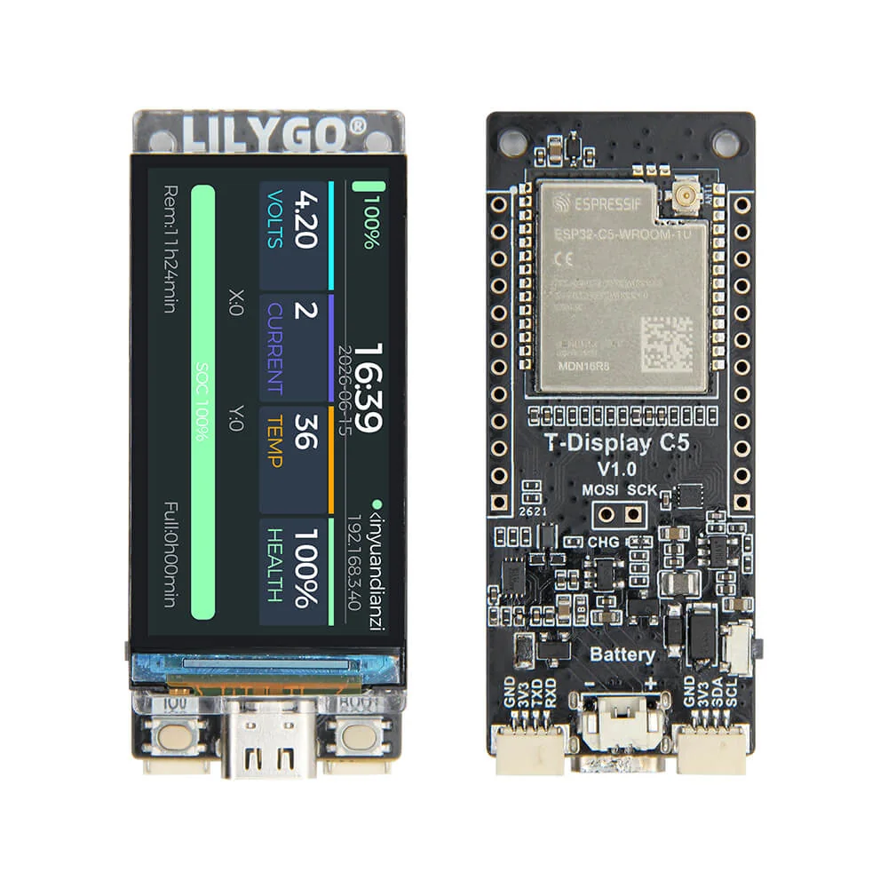

T-Display C5
LilyGO
T-Display C5 is an 1.9" 170x320 IPS ESP32 display board by LilyGO based on the ESP32-C5 with 16MB flash, 8MB PSRAM.
Features, ports & interfaces
- 8 MB PSRAM
- 16 MB flash
- Wi-Fi 6 (802.11ax, dual-band 2.4 + 5 GHz) – version from the ESP32-C5 datasheet
- Bluetooth 5 (LE) – version from the ESP32-C5 datasheet
- Thread (802.15.4) – IEEE 802.15.4 radio of the ESP32-C5 – SoC capability per the Espressif datasheet; needs firmware support
- Zigbee (802.15.4) – IEEE 802.15.4 radio of the ESP32-C5 – SoC capability per the Espressif datasheet; needs firmware support
- Matter-capable radio (Wi-Fi / Thread) – ESP32-C5 capability per the Espressif datasheet; firmware-dependent
Specifications
| Parameter | Value | Source |
|---|---|---|
| Screen size | 1.9" | source |
| Resolution | 170x320 | source |
| Panel | IPS | source |
| Shape | Rectangular | |
| MCU / SoC | ESP32-C5, 2.4 and 5 GHz dual-band Wi-Fi 6 | source |
| MCU family | ESP32-C5 | source |
| Flash | 16MB | source |
| PSRAM | 8MB | source |
| Wi-Fi | Wi-Fi 802.11 ax/b/g/n, BLE 5 | source |
| Bluetooth | BLE 5 | source |
| Category | LilyGO (T-series) | |
| Dimensions | 62 x 26 x 10mm | source |
| Display | 1.9 inch ST7789 IPS LCD Resolution: 170 x 320, RGB565; 4-Wire SPI, 3.3V | source |
| Vendor | LilyGO |
Official links & documentation
Notes
- Auto-added by the monthly scraper on 2026-11-24 from the official product page; values are copied verbatim from that page, fields it does not state are empty. Not yet hand-reviewed.